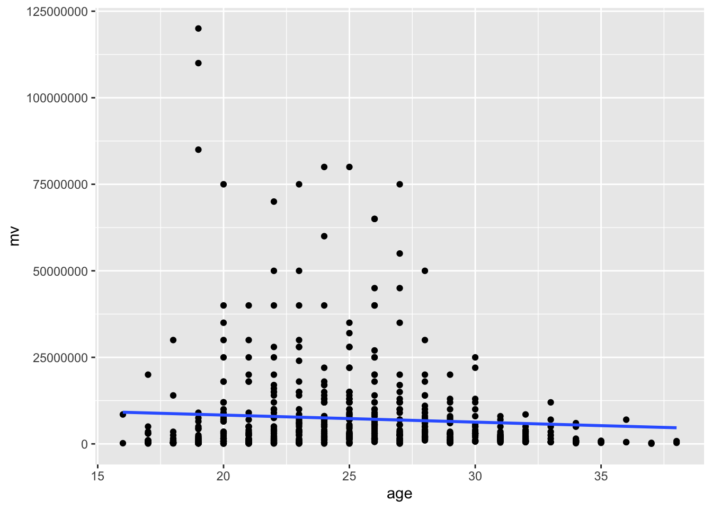
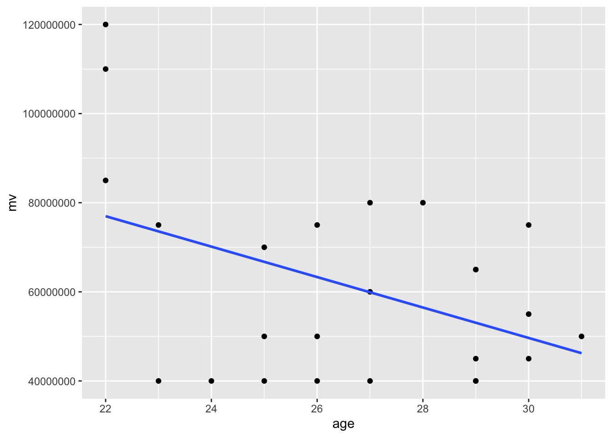
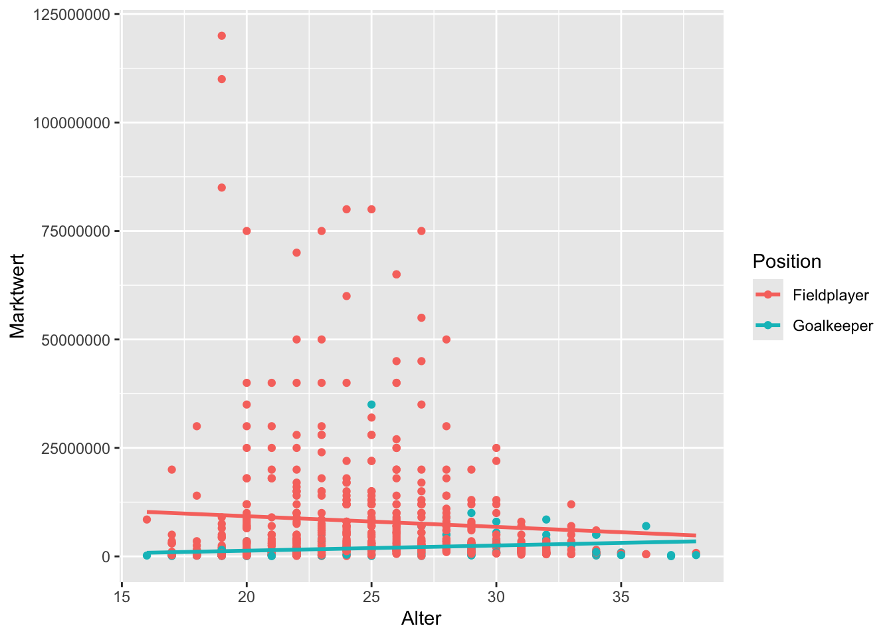
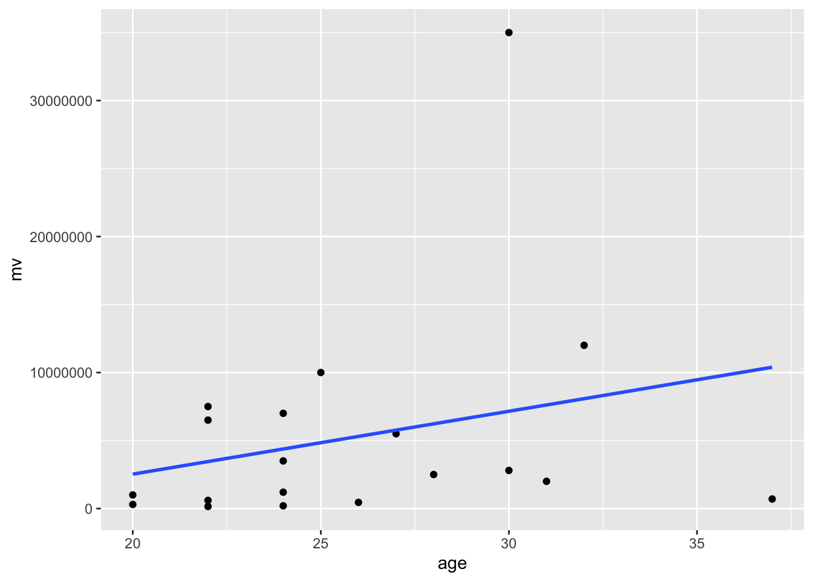
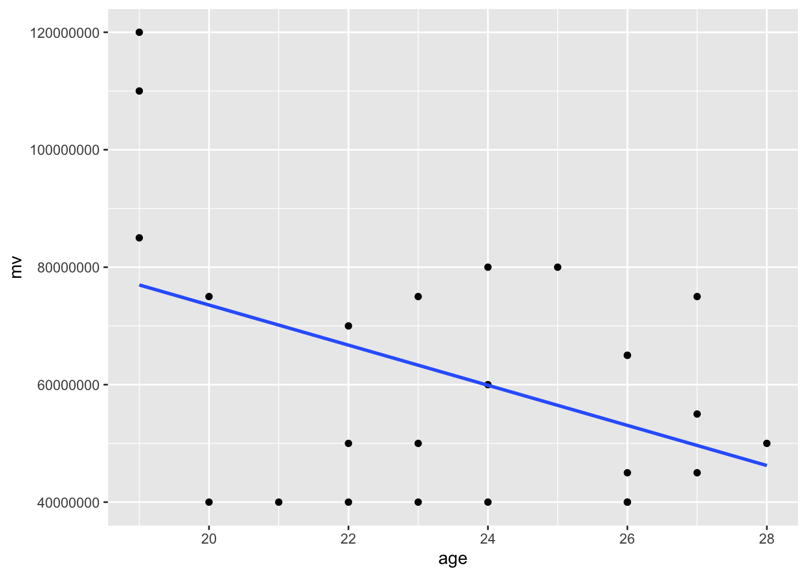
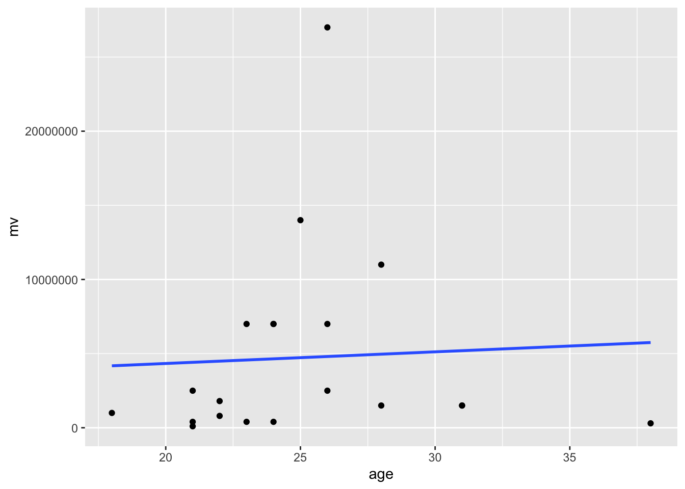
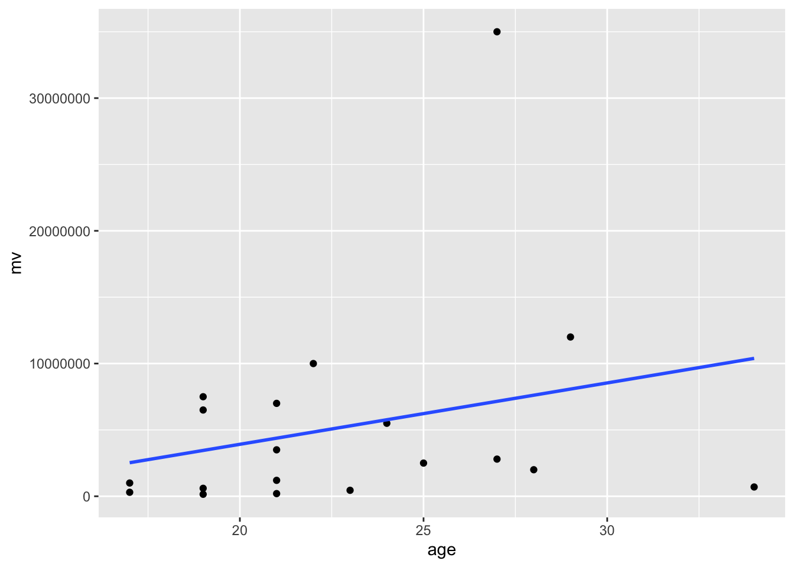

# Load libraries ----
library(tidyverse)
library(glue)
library(gt)
options(scipen=999) # Zahlenformat (kein wiss. Format)
### load data -----
date <- '2023-09-06' #oder: Sys.Date()
my_in_file<-glue('buli_raw_{date}.rds')
buli <- read_rds(file = xfun::from_root("data","raw",my_in_file))
### Data Wrangling ----
tbl_buli <- buli %>%
mutate(age = lubridate::year("2022-07-31") -
lubridate::year(player_dob),
pos_player = factor(player_position),
pos_bin = factor(if_else(player_position == "Goalkeeper",
"Goalkeeper",
"Fieldplayer")),
pos_cat = factor(case_when(
player_position == "Goalkeeper" ~ "Goalkeeper",
player_position %in% c("Centre-Back", "Left-Back", "Right-Back") ~ "Defense",
player_position %in% c("Central Midfield", "Defensive Midfield",
"Left Midfield", "Right Midfield",
"Attacking Midfield") ~ "Midfield",
player_position %in% c("Centre-Forward", "Left Winger",
"Right Winger", "Second Striker") ~ "Offense",
TRUE ~ NA_character_
))) %>%
rename(name = player_name,
mv = player_market_value_euro) %>%
select(name,age,mv,pos_player,pos_bin,pos_cat,player_height_mtrs,player_foot)Stochastische Regression
Übung mit Daten zur Fußball-Bundesliga
Datenimport
Daten zur Fussball-Bundesliga der Saison 2022-23. Datenquelle: www.transfermarkt.de, importiert am 09.06.2023 mit dem R-Paket worldfootballR.
Blick in die Daten
Anzahl Beobachtungen und Variablen sowie deskriptive Statistiken:
summary(tbl_buli) name age mv
Length:645 Min. :16.00 Min. : 50000
Class :character 1st Qu.:21.00 1st Qu.: 800000
Mode :character Median :24.00 Median : 2500000
Mean :24.71 Mean : 7346254
3rd Qu.:28.00 3rd Qu.: 7500000
Max. :38.00 Max. :120000000
NA's :11
pos_player pos_bin pos_cat player_height_mtrs
Centre-Back :116 Fieldplayer:564 Defense :214 Length:645
Centre-Forward : 94 Goalkeeper : 81 Goalkeeper: 81 Class :character
Goalkeeper : 81 Midfield :175 Mode :character
Central Midfield : 67 Offense :175
Attacking Midfield: 52
Right-Back : 51
(Other) :184
player_foot
Length:645
Class :character
Mode :character
Struktur:
head(tbl_buli) %>%
gt()| name | age | mv | pos_player | pos_bin | pos_cat | player_height_mtrs | player_foot |
|---|---|---|---|---|---|---|---|
| Manuel Neuer | 36 | 7000000 | Goalkeeper | Goalkeeper | Goalkeeper | 1.93 | right |
| Yann Sommer | 34 | 5000000 | Goalkeeper | Goalkeeper | Goalkeeper | 1.83 | right |
| Sven Ulreich | 34 | 700000 | Goalkeeper | Goalkeeper | Goalkeeper | 1.92 | right |
| Johannes Schenk | 19 | 300000 | Goalkeeper | Goalkeeper | Goalkeeper | 1.91 | |
| Matthijs de Ligt | 23 | 75000000 | Centre-Back | Fieldplayer | Defense | 1.89 | right |
| Dayot Upamecano | 24 | 60000000 | Centre-Back | Fieldplayer | Defense | 1.86 | right |
Streudiagramm der Grundgesamtheit:
#### ggplot ----
tbl_buli %>%
ggplot(aes(x=age,y=mv)) +
geom_point() +
geom_smooth(method = "lm", se = FALSE)`geom_smooth()` using formula = 'y ~ x'Warning: Removed 11 rows containing non-finite outside the scale range
(`stat_smooth()`).Warning: Removed 11 rows containing missing values or values outside the scale range
(`geom_point()`).
Aufgaben
Aufgabe 1
Diskutiere, ob es sich bei den Daten um eine Grundgesamtheit oder um eine Stichprobe handelt.
Antwort:
Grundsätzlich können die Daten als Grundgesamtheit aufgefasst werden, wenn es um die Gruppe der Bundesligaprofis der Saison 2022-2023 geht, weil diese Spieler alle im Datensatz enthalten sind. Wenn aber die Grundgesamtheit der Fußballprofis in Deutschland interessiert, müssten auch Spieler der 2. Bundesliga enthalten sein bzw. bei der Grundgesamtheit internationalen Fußballprofis auch andere Ligen, wie bspw. die Super League, Premier League oder Seria A. In diesen Fällen wären die vorliegenden Daten also als Stichprobe zu sehen. Ebenso müssten die Daten als Stichprobe gesehen werden, wenn es um die Gruppe der Bundesligaprofis (ohne weitere Qualifizierung) gehen soll, weil die Daten sichh auf die Saison 2022-2023 beschränken.
Aufgabe 2
Diskutieren Sie die Skalenniveaus der Variablen pos_bin, pos_cat, mv, player_foot, player_height_mtrs. Begründen Sie Ihre Einordnung und geben Sie für jede Variable ein Beispiel für eine sinnvolle und eine nicht sinnvolle mathematische Operation an.
Antwort:
Aufgabe 3
Ausgehend von der Diskussion zu Grundgesamtheit und Stichprobe: Verwende die passende Notation zur Formulierung einer Regressionsgleichung für die Variablen Marktwert und Alter. Begründe die Wahl von abhängiger und unabhängiger Variable.
Antwort:
Variante 1: Entscheidung für Grundgesamtheit - also Bundesligaprofis der Saison 2022-2023. Sachlogisch kann das Alter nicht vom Marktwert beeinflusst werden, entsprechend ist nur die folgende Formulierung eines Regressionsmodells sinnvoll:
\[ \mbox{Marktwert}=\beta_0 + \beta_1\cdot\mbox{Alter} + \varepsilon \]
Variante 2: Entscheidung für Stichprobe - bspw. aus der Grundgesamtheit der Bundesligaprofis (oder der Fussballprofis weltweit). Sachlogisch kann das Alter nicht vom Marktwert beeinflusst werden, entsprechend ist nur die folgende Formulierung eines Regressionsmodells sinnvoll:
\[ \mbox{Marktwert}=b_0 + b_1\cdot\mbox{Alter} + e \]
Aufgabe 4
Gehe im folgenden davon aus, dass die vorliegenden Daten als Grundgesamtheit interpretiert werden können. Ermittle die Parameter der Regressionsgeraden für die Daten der Grundgesamtheit. Interpretiere die Werte.
Antwort:
lm_pop <- tbl_buli %>%
lm(mv ~ age, data=.)
library(moderndive)
reg_pop <- lm_pop %>%
get_regression_table()Der Achsenabschnitt hat keine sinnvolle inhaltliche Interpretation, weil ein Wert von Null für das Alter eines Fussballprofis nicht plausibel ist. Mithin ist der Achsenabschnitt \(\beta_0=\) 12400871.117 als rein technische Größe zu sehen. Der Steigungsparamer \(\beta_1=\)= -203727.1 bedeutet, dass mit jedem zusätzlichen Jahr, der Marktwert eines Bundesligaspielers im Durchschnitt um 203727.1 € sink
Aufgabe 5
Gehe weiter davon aus, dass es sich bei den Daten um eine Grundgesamtheit handelt. Formuliere ein Modell mit Marktwert als abhängiger und pos_bin als unabhängiger Variable. Erstelle ein geeignetes Diagramm, um zu prüfen, ob die Position einen Effekt auf den Marktwert hat. Interpretiere.
Antwort:
Modell:
\[\mbox{mv} = \beta_0 + \beta_1\cdot\mbox{pos}\_\mbox{bin} + \varepsilon\]
tbl_buli %>%
ggplot(aes(x=pos_bin,y=mv)) + geom_boxplot()Warning: Removed 11 rows containing non-finite outside the scale range
(`stat_boxplot()`).
Aufgabe 6
Formuliere die Regressionsgleichung für das Modell, das mit folgendem Diagramm dargestellt werden kann. Interpretiere die Koeffizienten.
tbl_buli %>%
ggplot(aes(x = age, y = mv, color = pos_bin)) +
geom_point() +
labs(x = "Alter", y = "Marktwert", color = "Position") +
geom_smooth(method = "lm", se = FALSE)`geom_smooth()` using formula = 'y ~ x'Warning: Removed 11 rows containing non-finite outside the scale range
(`stat_smooth()`).Warning: Removed 11 rows containing missing values or values outside the scale range
(`geom_point()`).
Antwort:
\[\mbox{mv} = \beta_0 + \beta_1\cdot\mbox{age} + \beta_2\cdot\mbox{pos}\_\mbox{bin} + \beta_3\cdot\mbox{age}\cdot\mbox{pos}\_\mbox{bin} + \varepsilon\]
mit \(\beta_0\) , \(\beta_1\), \(\beta_2\), \(\beta_3\)
Aufgabe 7
Ermittle die Koeffizienten des Modells aus Aufgabe 6 und gib diese in Tabellenform aus.
Antwort:
reg_interaction <- tbl_buli %>%
lm(mv~age*pos_bin, data=.)
library(moderndive)
library(gt)
reg_interaction %>%
get_regression_table() %>% select(term, estimate) %>%
gt()| term | estimate |
|---|---|
| intercept | 14184939.6 |
| age | -246224.0 |
| pos_bin: Goalkeeper | -15260087.5 |
| age:pos_binGoalkeeper | 365742.5 |
Bei dieser Regressionsanalyse handelt es sich um ein Interaktionsmodell, das den Zusammenhang zwischen Alter, Spielerposition und Marktwert für die vollständige Grundgesamtheit der Bundesligaspieler der Saison 2022/23 beschreibt. Die Koeffizienten zeigen die tatsächlichen Zusammenhänge in dieser Grundgesamtheit:
- intercept (14184940): Dies ist der tatsächliche Basiswert in Euro für einen Feldspieler im Alter von 0 Jahren. Obwohl dieser Wert als theoretischer Ausgangspunkt dient, da es keine Spieler dieses Alters gibt, repräsentiert er den Y-Achsenabschnitt der Regressionsgeraden.
- age (-246224): Für Feldspieler in der Bundesliga beträgt der tatsächliche Rückgang des Marktwerts etwa 246224 Euro pro zusätzlichem Altersjahr. Dies ist keine Schätzung, sondern beschreibt den realen linearen Zusammenhang zwischen Alter und Marktwert bei Feldspielern.
- pos_bin: Goalkeeper (-15260088): Dies ist der tatsächliche Unterschied im Marktwert zwischen Torhütern und Feldspielern bei einem theoretischen Alter von 0 Jahren. Torhüter haben einen um 15,26 Millionen Euro niedrigeren Ausgangswert in der Marktwert-Alters-Beziehung.
- age:pos_binGoalkeeper (365.743): Der Interaktionsterm zeigt den tatsächlichen Unterschied im Alterseffekt zwischen Torhütern und Feldspielern. Während der Marktwert von Feldspielern pro Jahr um 246.224 Euro sinkt, ist dieser Effekt für Torhüter um 365.743 Euro positiver. Das bedeutet konkret: Torhüter in der Bundesliga gewinnen mit jedem zusätzlichen Altersjahr etwa 119.519 Euro an Marktwert (365.743 - 246.224 = 119.519).
Weil wir mit der Grundgesamtheit arbeiten, ist die Betrachtung der p-Werte oder Konfidenzintervalle nicht notwendig. Die Koeffizienten repräsentieren die tatsächlichen linearen Zusammenhänge zwischen den Variablen in der untersuchten Population. Diese Zahlen beschreiben die reale Marktwertstruktur in der Bundesliga-Saison 2022/23 und können direkt für Marktanalysen und Entscheidungen genutzt werden.
Aufgabe 8
Formuliere nun eine Regressionsgleichung für ein Modell mit age und pos_bin als unabhängigen Variablen ohne Einfüührung eines Interaktionsterms. Erzeuge ein passendes Diagramm und ermittle die Parameter für Daten der Grundgesamtheit.
Antwort:
\[\mbox{mv} = \beta_0 + \beta_1\cdot\mbox{age} + \beta_2\cdot\mbox{pos}\_\mbox{bin} + \varepsilon\]
tbl_buli %>%
ggplot(aes(x = age, y = mv, color = pos_bin)) +
geom_point() +
labs(x = "Alter", y = "Marktwert", color = "Position") +
geom_parallel_slopes(se = FALSE)Warning: Removed 11 rows containing non-finite outside the scale range
(`stat_parallel_slopes()`).Warning: Removed 11 rows containing missing values or values outside the scale range
(`geom_point()`).
reg_parallel <- tbl_buli %>%
lm(mv ~ age + pos_bin, data = .)
# Get regression table:
reg_parallel %>%
get_regression_table() %>% select(term, estimate) %>%
gt()| term | estimate |
|---|---|
| intercept | 12223151.1 |
| age | -166643.5 |
| pos_bin: Goalkeeper | -5883125.6 |
Bei dieser Regressionsanalyse handelt es sich um ein paralleles Regressionsmodell (ohne Interaktion), das den Zusammenhang zwischen Alter, Spielerposition und Marktwert für die vollständige Grundgesamtheit der Bundesligaspieler der Saison 2022/23 beschreibt:
- intercept (12.223.151): Dies ist der tatsächliche Basiswert in Euro für einen Feldspieler im Alter von 0 Jahren in der Grundgesamtheit. Auch wenn dieser Wert theoretischer Natur ist, da es keine Spieler dieses Alters gibt, dient er als Y-Achsenabschnitt der Regressionsgeraden.
- age (-166.644): Für alle Spieler, unabhängig von ihrer Position, beträgt der tatsächliche Rückgang des Marktwerts etwa 166.644 Euro pro zusätzlichem Altersjahr. Dies ist kein geschätzter, sondern der reale lineare Zusammenhang zwischen Alter und Marktwert in der Bundesliga-Population.
- pos_bin: Goalkeeper (-5.883.126): Dies ist der tatsächliche Unterschied im Marktwert zwischen Torhütern und Feldspielern, unabhängig vom Alter. Torhüter haben in der Bundesliga generell einen um 5,88 Millionen Euro niedrigeren Marktwert als Feldspieler.
Im Gegensatz zum Interaktionsmodell geht dieses Modell davon aus, dass der Alterseffekt für Torhüter und Feldspieler identisch ist (parallele Regressionsgeraden). Das bedeutet, dass beide Spielertypen mit zunehmendem Alter den gleichen Marktwertabfall von 166.644 Euro pro Jahr erfahren, jedoch auf unterschiedlichen Niveaus beginnen.
Da wir mit der Grundgesamtheit arbeiten, sind diese Koeffizienten keine Schätzungen mit Unsicherheiten, sondern beschreiben die tatsächlichen linearen Beziehungen in der untersuchten Population der Bundesligaspieler. Diese Zahlen liefern konkrete Einblicke in die Marktwertstruktur der Bundesliga-Saison 2022/23 und können direkt für Marktanalysen und strategische Entscheidungen verwendet werden.
Aufgabe 9
Betrachte die vorliegenden Daten nun als Stichprobe. Kann aus den Daten geschlossen werden, dass Feldspieler einen signifikant höheren Marktwert haben? Betrachte die vorliegenden Daten nun als Stichprobe. Kann aus den Daten geschlossen werden, dass Feldspieler einen signifikant höheren Marktwert haben? Führe einen t-Test im Resampling-Ansatz durch und ermittle das Konfidenzintervall. Vergleiche die Ergebnisse mit dem traditionellen t-Test.
Antwort:
library(infer)
ttest_infer_permutation <- tbl_buli %>%
specify(mv ~ pos_bin) %>%
hypothesize(null = "independence") %>%
generate(reps = 1000, type = "permute") %>%
calculate(stat = "diff in means", order = c("Fieldplayer", "Goalkeeper"))Warning: Removed 11 rows containing missing values.# Dann können wir den beobachteten Wert verwenden
observed_stat <- tbl_buli %>%
specify(mv ~ pos_bin) %>%
calculate(stat = "diff in means", order = c("Fieldplayer", "Goalkeeper"))Warning: Removed 11 rows containing missing values.# p-Wert berechnen
ttest_infer_permutation %>%
get_p_value(obs_stat = observed_stat$stat, direction = "two-sided")Warning: Please be cautious in reporting a p-value of 0. This result is an approximation
based on the number of `reps` chosen in the `generate()` step.
ℹ See `get_p_value()` (`?infer::get_p_value()`) for more information.# A tibble: 1 × 1
p_value
<dbl>
1 0# Konfidenzintervall
ttest_infer_bootstrap <- tbl_buli %>%
specify(mv ~ pos_bin) %>%
hypothesize(null = "independence") %>%
generate(reps = 1000, type = "bootstrap") %>%
calculate(stat = "diff in means", order = c("Fieldplayer", "Goalkeeper"))Warning: Removed 11 rows containing missing values.ttest_infer_bootstrap %>%
get_confidence_interval(level = 0.95, type = "percentile") %>% gt()| lower_ci | upper_ci |
|---|---|
| 4594422 | 7544569 |
t.test(mv ~ pos_bin, data = tbl_buli)
Welch Two Sample t-test
data: mv by pos_bin
t = 7.8346, df = 370.07, p-value = 0.00000000000005034
alternative hypothesis: true difference in means between group Fieldplayer and group Goalkeeper is not equal to 0
95 percent confidence interval:
4563916 7622569
sample estimates:
mean in group Fieldplayer mean in group Goalkeeper
8115117 2021875 Inhaltlich führen beide Methoden zur gleichen Schlussfolgerung: Es gibt einen statistisch signifikanten und praktisch bedeutsamen Unterschied im Marktwert zwischen Feldspielern und Torhütern. Der Unterschied ist so ausgeprägt, dass beim Resampling-Ansatz der p-Wert nicht mehr präzise genug dargestellt werden kann und auf 0 gerundet wird, während der t-Test die extreme Signifikanz numerisch genauer quantifizieren kann.
Das Konfidenzintervall aus dem Bootstrap-Ansatz [4.478.845, 7.656.593] ist sehr ähnlich zum t-Test-Konfidenzintervall [4.563.916, 7.622.569]. Beide geben ein Konfidenzintervall für die Differenz “Fieldplayer - Goalkeeper” an, also wie viel mehr Wert ein Feldspieler im Vergleich zu einem Torhüter hat.
Aufgabe 10
Führe nun eine Regression für folgende Gleichung durch:
\[\mbox{mv}=b_0+b_1\cdot\mbox{pos}\_\mbox{bin}+e\]
Interpretiere die Regressionstabelle und Vergleiche mit dem Ergebnis aus Aufgabe 9.
Antwort:
reg_test <- tbl_buli %>%
lm(mv ~ pos_bin, data = .)
get_regression_table(reg_test) %>%
gt() | term | estimate | std_error | statistic | p_value | lower_ci | upper_ci |
|---|---|---|---|---|---|---|
| intercept | 8115117 | 565902.7 | 14.340 | 0 | 7003840 | 9226394 |
| pos_bin: Goalkeeper | -6093242 | 1593093.9 | -3.825 | 0 | -9221640 | -2964845 |
Während die Konfidenzintervalle für traditionellen Ansatz und bootstrapping sehr ähnlich sind, ist das Konfidenzintervall im Regressionsansatz deutlich abweichend. Der Unterschied in den Vorzeichen erklärt sich dadurch, dass es für den Koeffizienten “pos_bin: Goalkeeper” berechnet wurde, was die umgekehrte Differenz “Goalkeeper - Fieldplayer” darstellt. Dieser Koeffizient gibt an, wie viel weniger Wert ein Torhüter im Vergleich zu einem Feldspieler hat, daher das negative Vorzeichen.
Änderung der Referenzgruppe im Regressionsansatz:
# Umkodieren der Variable pos_bin, sodass Torhüter die Referenzkategorie ist
tbl_buli <- tbl_buli %>%
mutate(pos_bin_rev = relevel(pos_bin, ref = "Goalkeeper"))
# Regression mit umgekehrter Referenz
reg_test_rev <- lm(mv ~ pos_bin_rev, data = tbl_buli)
get_regression_table(reg_test_rev) %>%
gt()| term | estimate | std_error | statistic | p_value | lower_ci | upper_ci |
|---|---|---|---|---|---|---|
| intercept | 2021875 | 1489195 | 1.358 | 0.175 | -902494.4 | 4946244 |
| pos_bin_rev: Fieldplayer | 6093242 | 1593094 | 3.825 | 0.000 | 2964844.5 | 9221640 |
Nun stimmen die Vorzeichen mit den Konfidenzintervallen aus traditionellem und bootstrapping-Ansatz überein, aber es bleibt ein deutlicher Unterschied, der auf unterschiedliche Berechnungsweisen zurückführen lässt.
Was jedoch den Schätzer und den p-Wert angeht, können wir eine Äquivalenz zwischen t-Test und Regression feststellen. Daher kann der t-Test als Spezialfall eines linearen Modells betrachtet werden. In diesem Beispiel liefern beide Methoden die gleiche inhaltliche Schlussfolgerung: Torhüter haben einen signifikant niedrigeren Marktwert als Feldspieler, mit einer Differenz von etwa 6 Millionen Euro.
Vorteile des Regressionsansatzes:
- Flexibilität für die Einbeziehung weiterer Variablen (z.B. Alter, Spielposition)
- Erweiterbarkeit für komplexere Modelle (z.B. Interaktionen)
- Konsistente Methodologie für verschiedene Analyse
Aufgabe 11
Nutze die Daten zu den 20 Spielern mit dem höchsten Marktwert und erstelle für diese Stichprobe ein Streudiagramm mit Regressionsgerade. Ermittle dann die OLS-Schätzer \(b_0\) und \(b_1\) als Schätzer für die wahren Parameter \(\beta_0\) und \(\beta_1\) des Regressionsmodells. Interpretiere die Ergebnisse und diskutiere insbesondere die Frage der Verzerrtheit der konkreten Parameter-Schätzung
Antwort:
tbl_buli %>%
slice_max(order_by = mv,n=20) %>%
ggplot(aes(x=age,y=mv)) +
geom_point() +
geom_smooth(method = "lm", se = FALSE)`geom_smooth()` using formula = 'y ~ x'
reg_top20 <- tbl_buli %>%
slice_max(order_by = mv,n=20) %>%
lm(mv~age,data=.) %>%
get_regression_table()Wie im Fall der für die Population ermittelten Parameter ist der Achsenabschnitt \(b_0\) auch für die Stichprobe der Top20 Spieler eine rein technisch Größe. Der Steigungsparamer \(b_1=\)-3416070.677 bedeutet, dass mit jedem zusätzlichen Jahr, der Marktwert eines Bundesligaspielers aus den Top 20 im Durchschnitt um 3416070.677 € sinkt. Mithin ist die Schätzung von \(b_1\) deutlich größer als der Parameter der Population \(\beta_1\); dies allein ist aber keine Verzerrung, weil der Wert mit einem (grundsätzlich unverzerrten OLS-Schätzer ermittelt wurde. Weil die Schätzung aber auf Grundlage einer nicht zufälligen Stichprobe ermittelt wurde, sondern mit Daten einer systematisch verzerrte Stichprobe (selection bias), muss die Schätzung von \(b_1\) als verzerrt gelten.
Aufgabe 12
Ziehe nun mit Hilfe der slice_sample()-Funktion eine weitere Stichprobe vom Umfang \(n=20\). Stelle die Reproduzierbarkeit durch set.seed(23)sicher. Erstelle erneut ein Diagramm, ermittle die Parameter der Regressionsgerade (\(b_0'\) und \(b_1'\)) interpretiere. Beurteile insbesondere die Frage der (Un-)Verzerrtheit des Schätzers \(b_1'\).
Antwort:
set.seed(23)
tbl_sample1 <- tbl_buli %>%
slice_sample(n=20)
tbl_sample1 %>%
ggplot(aes(x=age,y=mv)) +
geom_point() +
geom_smooth(method = "lm", se = FALSE)`geom_smooth()` using formula = 'y ~ x'
reg_sample1 <- tbl_sample1 %>%
lm(mv~age, data=.) %>%
get_regression_table()Der Steigungsparamer \(b_1'=\) 78468.283 bedeutet, dass mit jedem zusätzlichen Jahr, der Marktwert eines Bundesligaspielers aus der zufälligen Stichprobe im Durchschnitt um 78468.283 € steigt. Auch wenn der Wert von \(b_1'\)qualitativ diametral dem Parameter \(\beta_1\) für die Grundgesamtheit entgegensteht (positiver vs. negativer Wert), handelt es sich um eine unverzerrte Schätzung, weil diese mit einem OLS-Schätzer und Daten einer Zufallsstichprobe berechnet wurde.
Aufgabe 13
Ziehe eine weitere Stichprobe \((n=20)\), stelle diesmal die Reproduzierbarkeit mit set.seed(9) sicher. Erstelle ein letztes Diagramm, ermittle die Parameter (\(b_0''\) und \(b_1''\)) der Regressionsgerade und interpretiere die Ergebnisse. Beurteile auch in diesem Fall die Frage der (Un-)Verzerrtheit des Schätzers \(b_1''\).
Antwort:
set.seed(9)
tbl_sample2 <- tbl_buli %>%
slice_sample(n=20)
tbl_sample2 %>%
ggplot(aes(x=age,y=mv)) +
geom_point() +
geom_smooth(method = "lm", se = FALSE)`geom_smooth()` using formula = 'y ~ x'Warning: Removed 1 row containing non-finite outside the scale range
(`stat_smooth()`).Warning: Removed 1 row containing missing values or values outside the scale range
(`geom_point()`).
reg_sample2 <- tbl_sample2 %>%
lm(mv~age, data=.) %>%
get_regression_table()Der Steigungsparamer \(b_1''=\) 462393.647 bedeutet, dass mit jedem zusätzlichen Jahr, der Marktwert eines Bundesligaspielers aus der zufälligen Stichprobe im Durchschnitt um 462393.647 € sinkt. Damit hat der Wert des Schätzers \(b_1''\) zwar dasselbe Vorzeichen wie der Paramter \(\beta_1\) der Grundgesamtheit, aber quantitativ fällt der auf Basis der Stichprobe geschätzte Wertverlust deutlich geringer aus als in der Population. Weil es sich auch hier um einen OLS-Schätzer (und damit ein unverzerrtes Schätzverfahren) sowie um Daten einer Zufallsstichprobe handelt, kann auch bei \(b_1''\) von einer unverzerrten Schätzung ausgegangen werden.